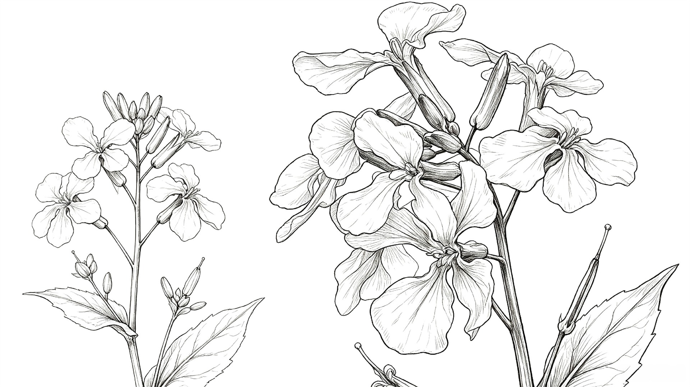
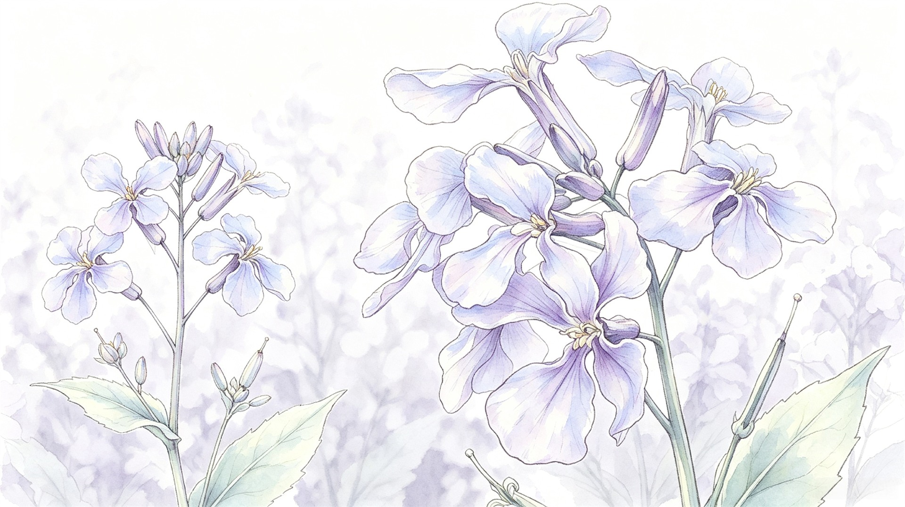
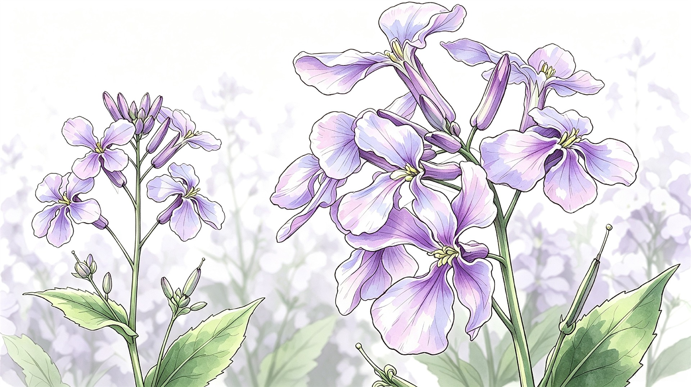

京
京华自然
NATURAL MEMORY / 03
首页
花木
湿地
鸟类
古树
山地
观赏攻略
返回分类页面



北京早春 · 二月兰
林下二月兰
蓝紫色小花铺在地面，把早春变成一片柔软的紫色雾气。
Orychophragmus violaceus
BEIJING / SPRING
01 — 10
二月兰分节
林下二月兰
01
花期与形态
02
林下生境
03
观赏分布
04
群落特征
北京 · 二月兰分类
01
花期与形态
返回二月兰首页
从形态到色彩
01
花期与形态
二月兰在早春开放，蓝紫色小花常成片铺展。